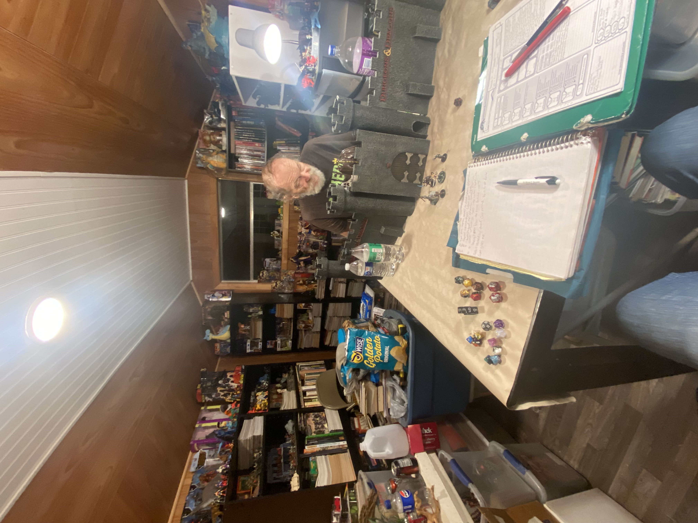
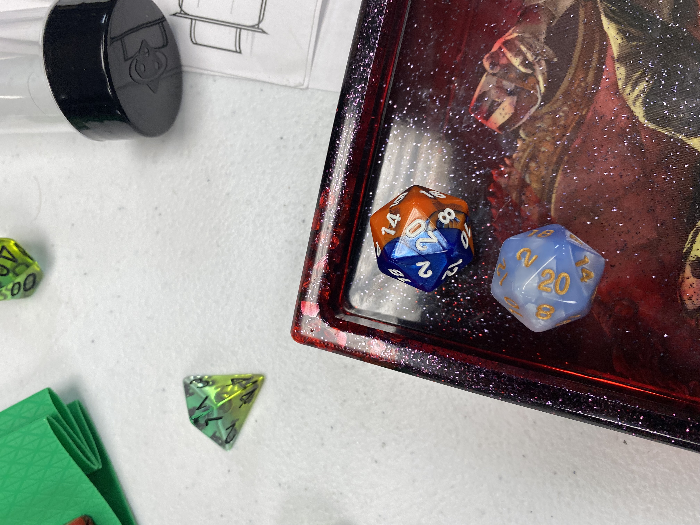
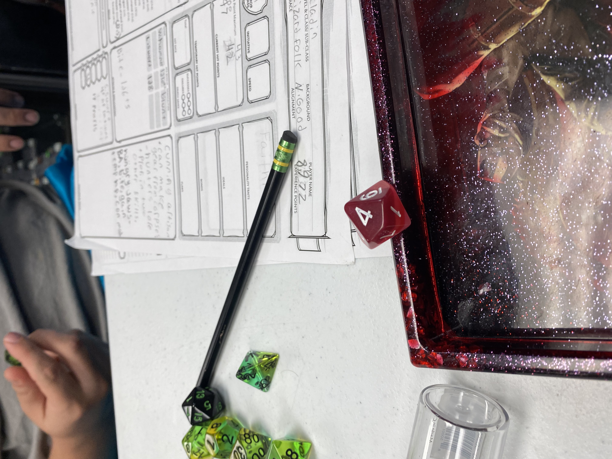
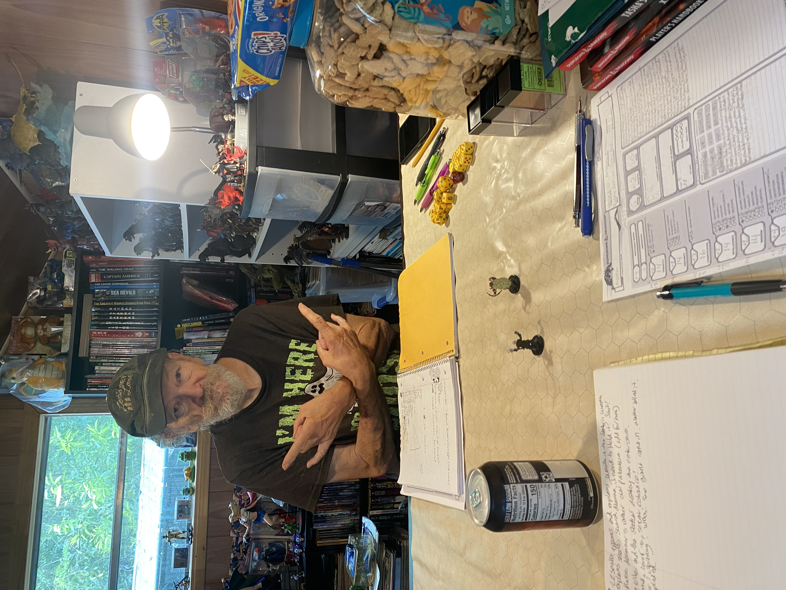

Rolling with a Mentor
Lessons That Applies Across Decades

John has been playing Dungeons & Dragons for over 40 years, and his experience and knowledge of the game has been invaluable to me as a player. He has taught me not only the mechanics of the game but also the importance of creativity, teamwork, and storytelling. Playing DND with John has been a rewarding experience that has helped me develop my skills as a player and storyteller, and I am grateful for his mentorship and guidance.

One of the most important lessons John has taught me is the importance of creativity in DND. He encourages players to think outside the box and come up with unique solutions to problems, rather than relying on traditional methods. This has helped me develop my own creativity and problem-solving skills, which has made the game more enjoyable and rewarding.
Dungeons & Dragons with John over the years is entertaining, intriguing, engaging, immersive, stimulating and even spellbinding. My impression with John’s DND campaign (setting) of Lose Wyrld at first was confusing and unorthodox at times, yet the most rewarding and fulfilling after learning and adapting to his playstyle. Adjusting to a new playstyle can be irritating and annoying at 1st but with time, patience and communication we were able to build a relationship not only as fellow DND players but as good friends till this day.

Over the years we had players come and go due to private life matters (which is common) and despite the many different players, John’s view point on the current DND cultural landscape hasn’t changed, that players are much different today than they were 40 years ago (he’s been playing since the 80’s). They’re entitled, argumentative and even spoiled during game sessions, it sounds ridiculous and you know what he’s right. Even when I started playing DND in 2015 I noticed my fellow party members (players) would argue with Dillon (our DM and friend) over his rulings, if their characters were negatively impacted. For those who don’t know, in DND you roll dice to determine whether or not your character succeeds or fails at their desired course of action. If they don’t roll high enough the PC (player character) does not accomplish the desired outcome.
John always advises that if a player has a question, complaint or inquiry about a DM’s ruling the player should ask AFTER the session regarding the concern. This helps build trust between players and their DM that can improve the experience at the table. John has been playing for over 40 years and the game has changed multiple times throughout the decades, his favorite edition (version) is Advanced Dungeons & Dragons second edition but the vast majority of players play the current version which is Fifth Edition (5e) and his LEAST favorite edition. Regretfully this causes confusion at John’s table as he is rather stubborn in his ways, we’ve had arguments in the past but in the player’s handbook the 1st rule is the DM has the final say.


"KISS: Keep It Simple Stupid!"
This was John’s most frequent advice. He believed that when the rules got too complicated, the story suffered. His goal was always to strip away the noise and get back to the heart of the adventure.
Although this might seem “unfair”, another way to look at this is to think that playing DND is the same as running a company. The DM is like the CEO who owns 51% of the company and the players are the employees who own 49% of the company, the players can collectively raise an issue and the DM can take it into consideration. At the end of the day there’s no game without the DM and players.
Categories: DUNGEONS & DRAGONS, Menteeship
Tags: #DNDculture #BeginnerTips #Johnisms